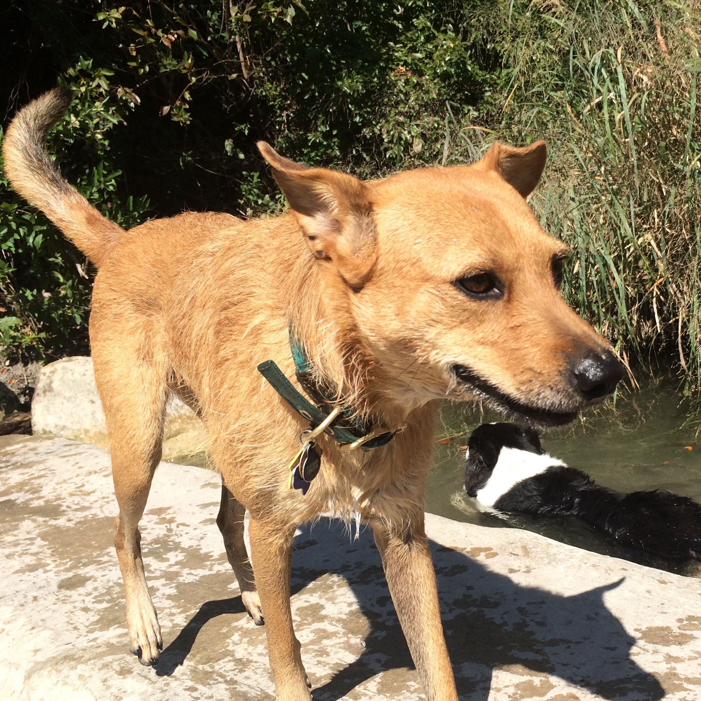
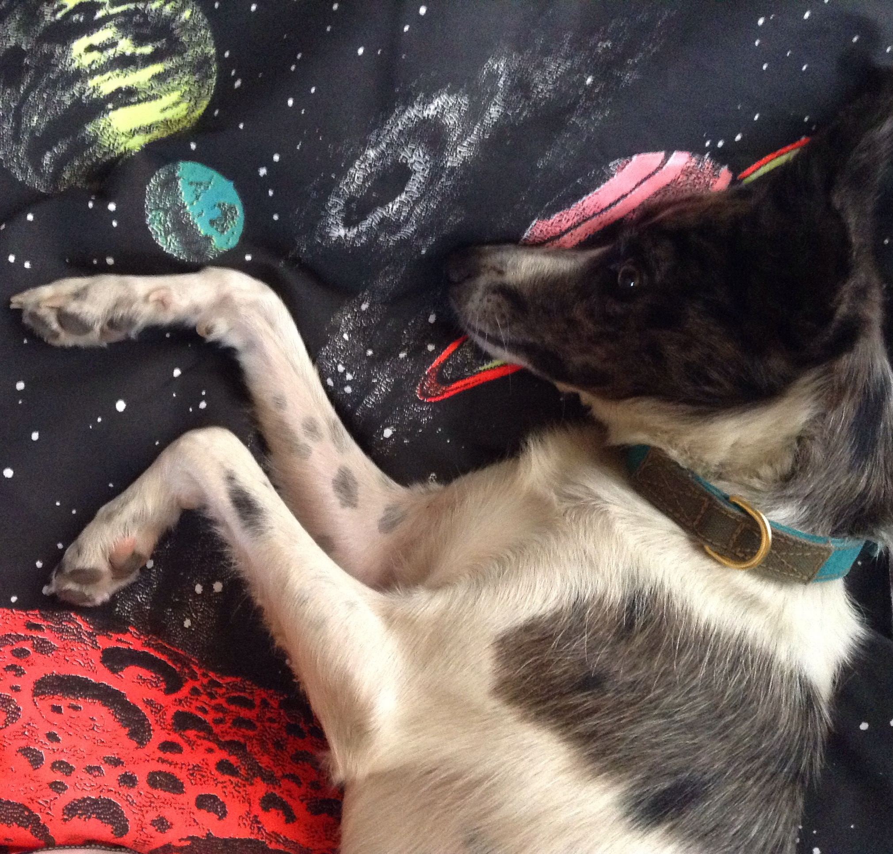

Fay
a.k.a. "Faze", "Faybird"

Fay is a rescue I adopted two years ago. My 18 year old had just died, and I went to the animal shelter looking for another older dog. I tried out a few, but they all went ravenously after my chickens. So I settled for a puppy.
Fay Facts
- Breed: Fay is very much a mutt...But I think she's very close in personality and looks to an Irish Terrier.
- Temperment: Fay is aloof with other dogs and people. Of course she is devoted to me.
- Age: 2.5 years.
- Illness: Fay got Parvo soon after we got her.
Hank
a.k.a. "Hanko", "Hanker Chif", "Hank E.R. Chif"

Cosmonaut
Someone found Hank in the winter, and decided to keep him in a cardboard box on their porch. Luckily the neighbors took him in and posted him on Craigslist. After Fay, 30 lbs, my husband wanted a "man's dog" — brindle or blue tick, big...I thought he looked big in the CL photo, but when we went to check him out, he was only 30lbs. All the same, we agreed he was a cutie and took him home.
Hank Facts
- Breed: mixed up creature. Maybe border collie? Maybe African Wild Dog? I call him a "creature".
- Temperment: So scared of toddlers! It's scary so I muzzle him when I take him out.(
- Age: 1.5 years.
- Illness: He got crazy fleas once. He wasn't even scratching, it was horrible